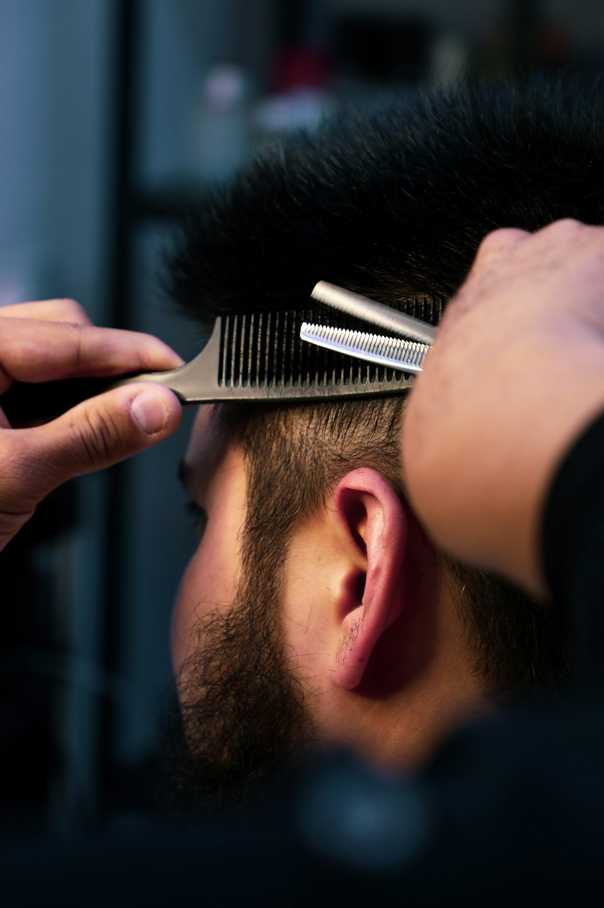
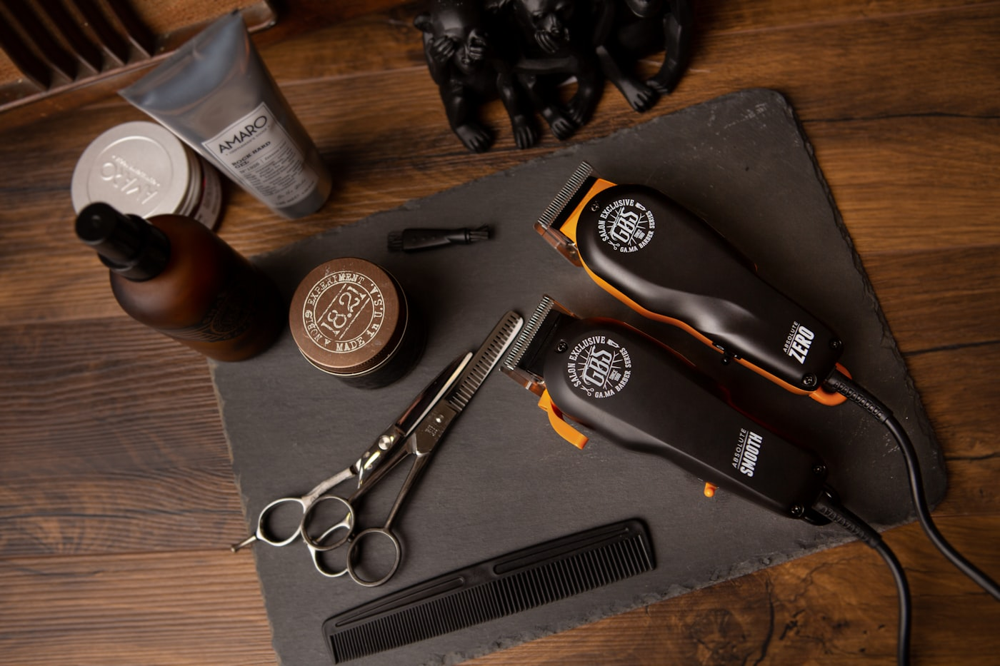
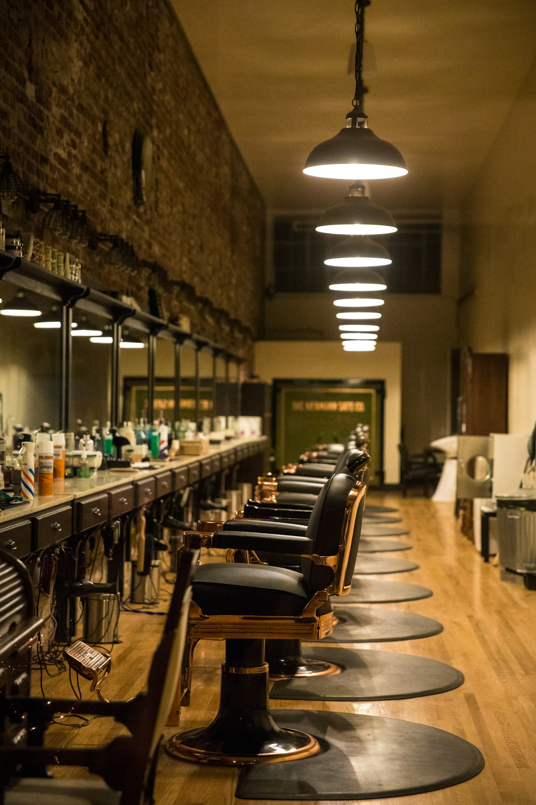
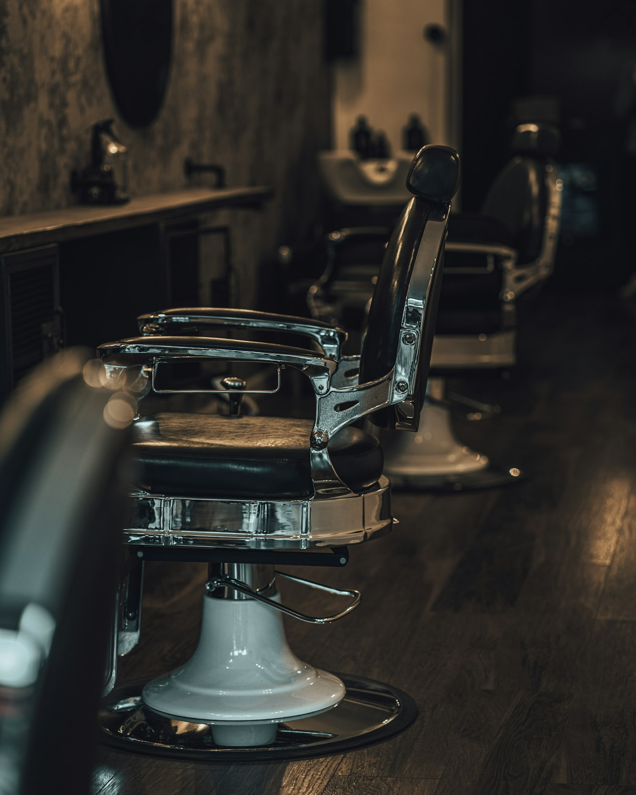

Keep your fade sharp between cuts
A fade looks best fresh — but a little upkeep buys you another week. Brush it daily, use a touch of product to shape it, and pop in for a quick line-up to keep the edges clean.
Read the guide →
The Gentleman's Journal
Straight-up grooming tips from the chair — keeping your fade clean, your beard right, and knowing when to book. New posts monthly.
A fade looks best fresh — but a little upkeep buys you another week. Brush it daily, use a touch of product to shape it, and pop in for a quick line-up to keep the edges clean.
Read the guide →

Wash, oil, comb, shape — the basics of a beard that looks intentional.

Fades, classics and longer styles each have a sweet spot.

Pomade vs clay vs cream — what to use and when.

What to bring, how the consult works, and what to expect.

Soften the grey without dyeing — natural and low-maintenance.

Fresh cut? A few local spots to go show it off.
Guys Google "how often should I cut my hair" and "best beard oil" long before they book. These guides answer exactly that — so The Elite Barbers shows up in search and in AI assistants (every post carries FAQ schema), builds trust as the local expert, and links straight to booking.